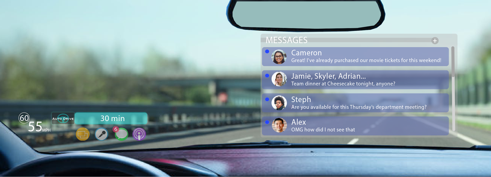

Background
Imagine yourself in a technologically advanced future.
One of the advanced technologies available to you is a highly automated vehicle.
You own a high-tech, trustworthy, and safe automated vehicle. The vehicle has conditional automation. That means that in some environments, like on the highway, the car’s automation will be in control (autopilot on) and the car will drive itself safely to your destination.
The car will be completely safe and when the autopilot is on it will handle all emergency cases. At some point, for example, after exiting the highway and entering the city, the car will require the driver to take over. The car will alert the driver a few minutes before it is for them to take over with a timer to indicate the transition.
When the automation is on and the car is driving automatically, it is safe for the driver to engage in non-driving work or leisure activities. The car is equipped with an augmented-reality system that projects information on the windshield.

Figure 1: The in-vehicle view when automation is on, the car is driving itself, and the driver can engage in a non-driving task - reading text messages.

Figure 2A: The in-vehicle view when the car notifies the driver that they will need to take over driving in 5 minutes.
Figure 2B: The in-vehicle view of the car when it is time for the user to take over driving.
Figure 3: The in-vehicle view when automation is off and the driver is in control.